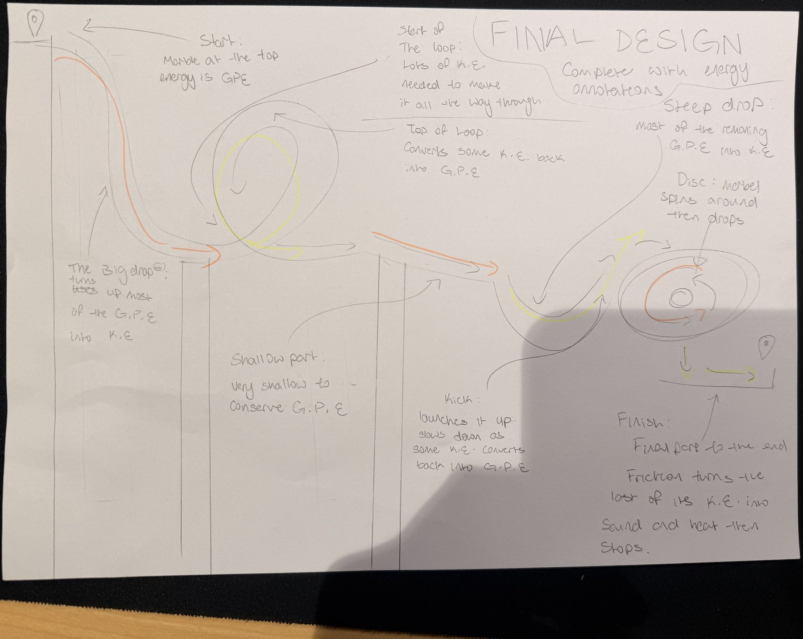
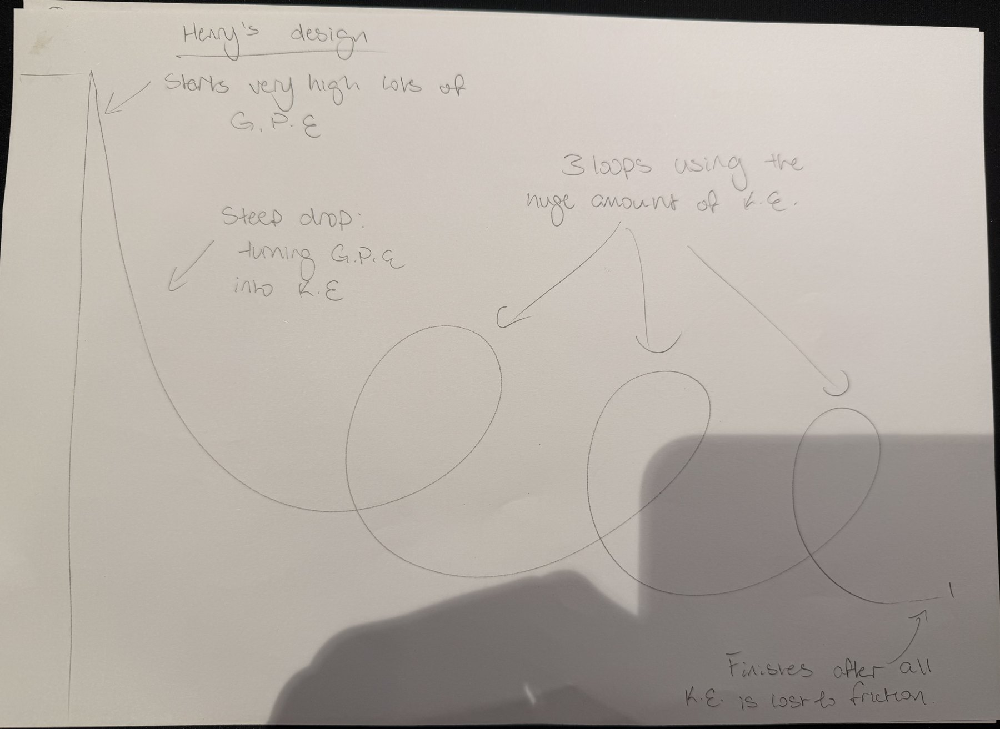
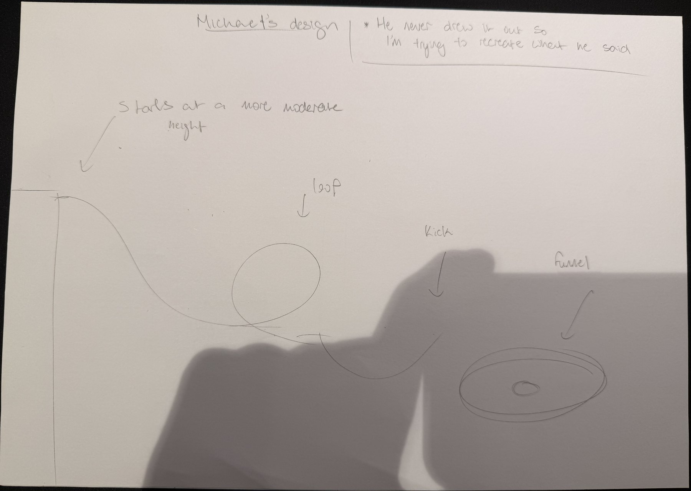
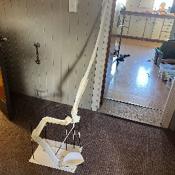
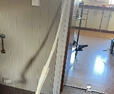
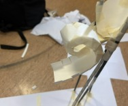
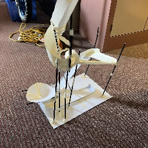
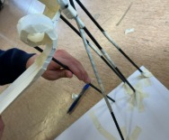
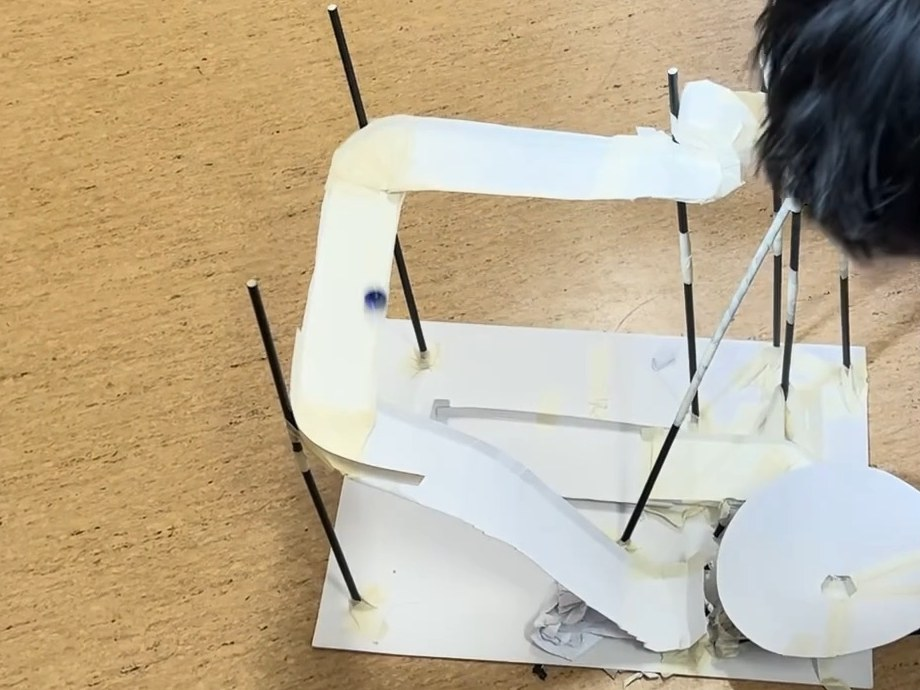

Henry
Lead builder · top section & supports
- Built the whole top section above the loop, including the long starting runway
- Built the support structures for the entire coaster
- Joined the top and bottom halves in the final assembly
A self-supporting marble roller coaster made from card, paper straws and masking tape. Its long first drop builds enough speed to carry the marble through a full loop.
Watch the test run
We split the coaster into two halves, built them at the same time, then joined them together with straw supports.
Lead builder · top section & supports
Builder · bottom section & loop
We each sketched our own concept, then combined them into one group design that we could build together.



The runway starts high above the loop. The further the marble drops, the more gravitational potential energy turns into kinetic energy, so it reaches the loop fast enough to make it all the way round.
The design splits naturally at the loop, so we could each build one half at the same time and then join them with straw supports.
The final build, from every angle. Each part is labelled with the job it does.






| Specification | Requirement | The Long Drop | Result |
|---|---|---|---|
| Loops | At least 1 | 1 | Met |
| Marble run time | At least 3 seconds | 5.3 seconds | Met |
| Thin card | No more than 8 A4 sheets | 8 sheets | Met |
| Straws | No more than 20 | 20 straws | Met |
We released the marble from the top of the runway and timed it all the way to the finish.
Nothing pushes the marble. Everything it does on the track comes from the energy it has at the start, and that energy keeps changing form all the way to the finish.
Stored energy an object has because of its height.
Ep = m × g × h
m = mass (kg) · g = 9.8 N/kg · h = height (m)
The marble has the most GPE at the top of the runway. That is the only energy it ever gets, so the higher it starts, the more energy it has to spend on the rest of the track.
Energy an object has because it is moving.
Ek = ½ × m × v²
m = mass (kg) · v = speed (m/s)
Rolling down the runway, GPE turns into KE and the marble speeds up. It is fastest at the bottom, just before the loop. Climbing the loop, KE turns back into GPE, so the marble is slowest at the top.
A force that acts against motion when surfaces rub or roll against each other. Air resistance is friction with the air.
Energy lost = energy at start − energy left
The lost energy becomes heat and sound
The card, the tape joins and the air all slow the marble, turning some of its kinetic energy into heat and sound. The rolling noise in our video is energy leaving the marble. This is why it eventually stops at the finish.
Six points along the track, and what the marble's energy is doing at each one.
The marble sits still at the top of the runway. All of its energy is GPE.
As the marble drops, GPE turns into KE and it speeds up.
The lowest point before the loop. Most of the GPE has become KE, so this is the fastest point.
Climbing the loop turns KE back into GPE, so this is the slowest point in the loop. The marble must still be moving to stay on the track.
Coming back down, GPE turns into KE again. Friction in the loop has already taken a big share of the energy.
Friction has turned the last of the KE into heat and sound, and the marble stops.
On a straight section, the track only has to hold up the marble's weight. In the loop, the track also has to push the marble round in a circle, so the marble presses much harder into the card. The harder two surfaces press together, the more friction there is.
Our loop also has tape joins for the marble to bump over, and the thin card flexes as the marble passes, soaking up even more energy.
Energy can't be created or destroyed, only changed from one form to another. This is the law of conservation of energy. The marble's total energy is set at the start, so to reach a higher point it would need more GPE than it ever had.
Friction takes some energy away along the way, so the marble can't even get back up to its starting height. A loop is harder still: the marble must still be moving at the top to stay on the track, so the top of the loop has to sit well below the start.
What worked, what didn't, and what we would change if we built The Long Drop again.
A chain pulls the train to the top of the first hill, giving it all its GPE. Our starting height does the same job.
Real loops are taller than they are wide, with a tighter curve at the top. This keeps the forces on riders lower than a perfect circle would.
At the end of the ride, brakes use friction or magnets to turn the train's KE into heat, just like friction stops our marble at the finish.